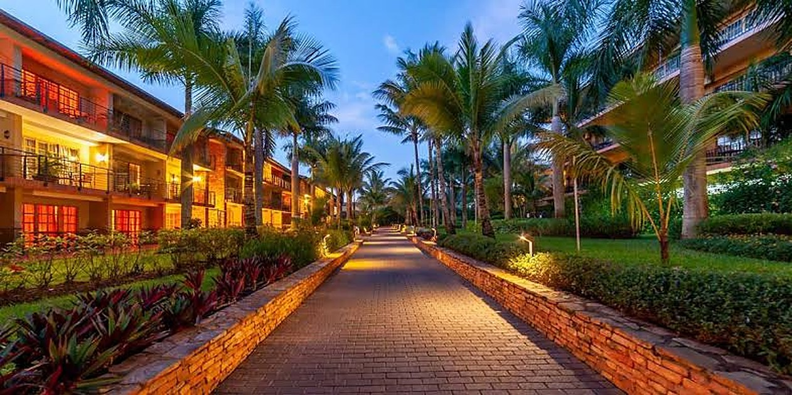

Photograph: Onyango George / EA Hospitality Pulse
The most movable money in travel is shopping for a destination. Kenya has been bidding with a building site.
Nine in ten meeting planners expect to spend more in 2027 and four in ten have already moved an event's destination under cost and geopolitical pressure. Africa holds about 4% of the world's association meetings, and the two East African capitals chasing the segment this week are chasing two very different versions of it.
On Monday morning at the Speke Resort Convention Centre in Munyonyo, a few hundred metres from the water, Jackline Nanteza opened a trade show that had not existed before. The inaugural Africa Destination Celebrations Conference and Expo ran for two days under the theme "Africa Unveils Events in the Wild", and it had drawn wedding planners and professional conference organisers from Nigeria, Kenya, the United Kingdom, Botswana, South Africa, Zambia, Romania, India, France and Spain. Nanteza, who founded the thing and runs it, put the question plainly. "Why should Africa be known primarily for wildlife, safaris and holidays only," she asked.
It is a fair question, and this week it arrived with unusually good timing. Two days after the Kampala expo closed, American Express Global Business Travel published its 2027 Global Meetings and Events Forecast, built on a YouGov survey of 500 meetings professionals across eleven countries, fielded between 5 and 14 August. The numbers describe a segment in rude health: 93% of planners say they are optimistic about the sector in 2027, and 91% expect their own meetings and events spend to rise. Gerardo Tejado Donde, Amex GBT's senior vice president for professional services, called the optimism "grounded in realism", noting that planners "know 2027 will demand sharper risk management and disciplined cost control".
That last clause is the part East African operators should read twice, because of what the same survey found planners actually do when cost and risk bite. Under geopolitical pressure, 39% have changed an event's destination or city, 37% have shifted to more virtual meetings, and 30% have held smaller meetings or switched venues. In other words, the money is growing and it is unusually willing to move. There is no other demand segment in travel where close to two in five buyers will relocate an entire piece of business on the strength of a better answer.
Willing to move is not the same as likely to arrive. The International Congress and Convention Association counted 12,438 international and regional association meetings worldwide in 2025. Africa hosted 497 of them, roughly 4%, against 53% for Europe, 22% for Asia-Pacific, 10% for North America and 9% for Latin America. The continent has been at about that share for years, and it has not moved because planners dislike Africa. It has not moved because of what the segment is: a market where the buyer commits years in advance, needs the venue to exist before the bid rather than after it, and chooses on confidence rather than on price.
Naledi Kabo, chief executive of the Africa Tourism Board, put the diagnosis more bluntly than most destination marketers would at an industry panel in early October. "I don't want to travel 10 to 24 hours for an experience I could have in a conference room in Detroit," she said. Her complaint was not about the flights. It was about the pitch. African destinations, she argued, still work a reactive model: "The traditional model waits for a planner to express interest and then responds to a request for proposal." The cost of that patience is structural. "By that point, the buyer may already have a shortlist dominated by familiar destinations." She was equally direct on reputation. "We do suffer from a perception problem more than, say, the European region," she said. "We need to be honest about that."
Carina Bauer, who runs the IMEX Group and therefore sees the buying end of this market as clearly as anyone, framed the counter-strategy in two sentences that deserve to be pinned above every sales desk in Nairobi. "Don't confuse value and price. Value in today's market is not necessarily the lowest price," she said. And then the discipline that follows from it: "Africa cannot bid for everything."
Two East African capitals are currently testing opposite readings of that advice, and the gap between their results is the most useful thing on the table this week.
Rwanda took the association route and has been working it for a decade. The Rwanda Development Board put the country's business events earnings at $94.7 million in 2025, up from $84.8 million the year before, with 165 international and regional events and more than 61,000 delegates against 115 events and 52,315 delegates in 2024. ICCA's own 2025 rankings place Kigali second in Africa with 35 qualifying meetings, behind Cape Town on 55. In January, ICCA confirmed that its 66th Congress will be held in Kigali from 24 to 27 October 2027, the first time the global association community has met in Africa in twenty years. Janet Karemera, who runs the Rwanda Convention Bureau, described the win as a chance "to welcome the global association community back to Africa for the first time in twenty years". Her colleague Christian Manzi, the bureau's director of destination marketing, offered the plainer version of why it matters: "If you're not in the room, you're going to be left behind."
Nothing in that record depended on Rwanda being large. Kigali has a fraction of Nairobi's room stock, a fraction of its airlift and a fraction of its corporate base. What it has is an institution that has been bidding continuously, under the same name, for long enough that planners can predict it. In a market where the buyer is pricing the risk of a destination changing its mind, continuity is the product.
Kenya's experience this year is the control group. The country recorded about 2.4 million international arrivals in 2024, of which more than 643,000 came for conferences, exhibitions and business events, a base that dwarfs Rwanda's entire delegate count. It also had the single clearest shot at a step change: the Bomas International Convention Complex, begun in March 2025, with a presidential pavilion for up to 30 heads of state, 35 meeting rooms, a 5,000-seat main auditorium, a 3,500-seat secondary hall and headline capacity for 11,000 delegates. The original completion target was April 2026. By late April, with the National Assembly's tourism committee reporting that the works would not finish in time, the target had moved to September, the budget had climbed from Sh31.5 billion towards Sh42 billion, and the Africa-France Summit that Nairobi had hoped to open the building with had been moved elsewhere.
Jeffers Miruka, secretary general of the Association for Kenya Business Events, has been the most willing to say what that cost. "The Africa-France Summit was supposed to become Kenya's defining MICE moment," he said, "but, because the convention infrastructure could not be delivered on time, the country lost an opportunity." His next point is the one that generalises beyond a single summit. "Conference tourism is highly competitive. Countries bid years in advance," he said. "When timelines keep shifting, Kenya's credibility in the global MICE market is weakened." And the structural conclusion: "The reality is that KICC, despite its historical significance, cannot carry Kenya's MICE ambitions alone anymore."
Kenya did finally get a national convention bureau through Cabinet in January, the second attempt at the institution Rwanda has had working for years. That is the right move and it is years late, which is the whole lesson. An association bid is not won by the destination with the best venue. It is won by the destination whose promise about a date in 2029 is believable, and believability is accumulated, not announced. A country that has twice started a convention bureau and twice reset a completion date is asking a buyer to underwrite its credibility, and the buyer has 12,000 other meetings to place.
Which is what makes Nanteza's Kampala expo more interesting than its modest scale suggests. Uganda is not bidding for congresses. It is going after celebrations: weddings, milestone events, the private end of the business. Simplicious Gessa of the Uganda Tourism Board tied it to the obvious strategic aim, saying the initiative "comes at a time when Uganda is intensifying efforts to diversify its tourism products", against a backdrop of arrivals rising from 1.37 million in 2024 to 1.64 million in 2025 and earnings climbing from USh4.81 trillion to USh5.83 trillion over the same period.
Celebration business has a structure that suits East African supply far better than association business does. It does not run on a four-year bid cycle. It does not require an 11,000-seat hall, a presidential pavilion or a convention bureau with institutional memory. A 150-guest destination wedding is, in operational terms, a lodge buyout with a long lead time, a high food and beverage attachment and a client who has already decided that remoteness is a feature. The margin profile is the inverse of safari FIT: fewer bookings, far higher value per booking, and almost no distribution cost, because the business arrives through a planner rather than an online travel agency.
The catch is that the one capability it demands is the one East African properties are weakest at. Christine Ogbeh, the Nigerian planner who founded Quoram Africa, named it without meaning to. "When a client chooses Africa for their event, they are trusting us with moments they cannot repeat," she said. A wedding cannot be moved by a week because a camp has overbooked, cannot absorb a supplier changing a quoted rate four months out, and cannot survive a property that treats a held date as provisional until the balance clears. Those are precisely the habits that a region selling short-lead safari inventory, on soft deposits, in a market where confirmations slide routinely, has spent two decades building into its operating model. Planners place repeat business on reliability, and they talk to each other.
So the week's lesson is not that East Africa should chase business events. It is that there are two doors into the segment and they demand different things. The association door needs an institution and a decade, and it is the one Rwanda has already walked through while Kenya was still pouring concrete. The celebrations door needs no new building at all, which is why Kampala can credibly open an expo for it from a standing start. What it needs is a property that can hold a date against a deposit and honour a rate a year out, which costs nothing to build and is harder to acquire than a convention centre.
Nanteza set the test herself, and it is the right one. "Our success will not be measured only by attendance, but by the businesses created," she said. The planners who flew to Munyonyo this week will place their next international enquiry somewhere. Whether any of it lands in East Africa will be decided not by the pitch, but by the first operator who answers a 2028 enquiry with a number that still holds in 2028.
📣 Telegram 💬 WhatsApp 💼 LinkedIn 📚 All guides